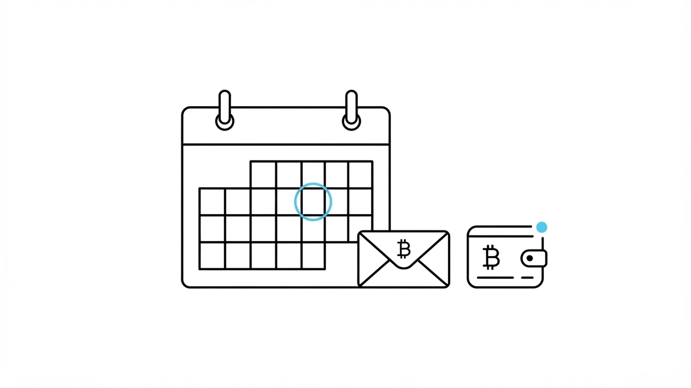

There is a paradox at the heart of a well-designed Bitcoin inheritance: the day it actually arrives should be the most boring day of the whole story.
No lawyer to call. No court to petition. No hidden safe to open. No cryptic seed to decipher under a lamp at 2 a.m. Somewhere, a signed transaction that has been waiting patiently on a handful of independent Will-Executor servers reaches its locktime, gets broadcast, confirms in a block — and your heir's wallet shows a new balance.
That is it. That is the whole event.
If we have done our job — if you have done yours — delivery day is a non-event. And that is precisely the point of this article: the difficulty of a Bitcoin inheritance is not on delivery day. It is in getting there prepared.
Delivery day, hour by hour
Let us watch it happen. Imagine your inheritance transaction is time-locked to a block height expected around 10:00 on a given morning.
- 08:47. The chain approaches the target height. Nothing happens. Nothing is supposed to happen. Somewhere in the world, a handful of Will-Executor servers you selected years ago quietly keep watching the block height, as they have every ten minutes for however long the will has existed.
- 09:52. The block before the target is mined. Each Will-Executor now knows the transaction becomes valid on the next block. Behind the scenes, each one prepares to broadcast the moment the timelock releases — because the fee output is theirs only if their broadcast is the one that confirms.
- 10:03. The target block is found. The transaction is now valid Bitcoin. Each executor races to submit it to their peers. Only one broadcast will actually reach miners first; the others will be discarded as duplicates.
- 10:14. A miner includes the transaction in the following block. It has one confirmation. Your heir's wallet, if open, notices an incoming payment. If it is closed, it will notice the next time it opens.
- 11:30. Six confirmations. The inheritance is settled by every standard used on the network.
That is the entire ceremony. It is, by design, indistinguishable from any other Bitcoin transaction — because that is what it is. Anyone with a block explorer can watch it, verify it, timestamp it. There are no papers to sign, no keys to hand over, no offices to visit. The heir has to do exactly one thing: be the person who controls the address the coins arrived at.
Which brings us to the hard part.
An address without a key is a tomb
Here is a sentence that ought to be pinned above every inheritance planner's desk: a Bitcoin address is worthless to whoever does not hold the private key that controls it.
The BAL protocol delivers coins on time, to the exact addresses you specified, with cryptographic certainty. What it cannot do — what nothing on-chain can do — is make sure that whoever you named as your heir actually holds the seed phrase that controls those addresses.
If you generate a fresh address in your own wallet and put it in your will as your daughter's inheritance, the transaction will execute perfectly. Your daughter will inherit a string of characters she cannot spend. The Bitcoin will not be lost in the technical sense — it will simply be entombed, as visible and as inaccessible as any of the many "lost" coins in on-chain analyses.
The heir must control the seed of the wallet that owns the destination address. There are only two honest ways to arrange that:
- The heir already has her own wallet. She generates a fresh address in it and sends it to you. You put that address in your will. You never see her seed, she never sees yours. This is the clean case.
- You prepare a wallet on her behalf. You generate a new seed dedicated to the inheritance, take a receiving address from it, and put the seed somewhere she can find it after — a sealed envelope with a trusted person, a safety deposit box with clear instructions, a paper carefully hidden with a note. This is the fragile case, because now a single piece of paper stands between the coins and oblivion.
Most non-technical heirs need option 2. Most Bitcoin inheritances that fail, fail on option 2. Not because of the protocol — because of the paper.
Before: what to leave your heir
The bulk of the work happens years before delivery day. It is undramatic, mostly analog, and it is the entire game.
A good letter to your heir should contain, at minimum:
- A plain-language explanation of what is coming. Not "you will receive an inheritance transaction from a time-locked UTXO." Something like: "On or around [date], a certain amount of Bitcoin will arrive at the address below. This is your inheritance. It comes from a protocol I set up years ago; nobody had to sign anything for it to happen."
- The receiving address, so the heir can verify it on a block explorer before and after delivery.
- The seed phrase of her own wallet — if you prepared it for her — with clear instructions: what it is, what it looks like, how to type it into a wallet application, and, most importantly, who should never see it.
- A short list of trusted software. Name specific, reputable wallets. Otherwise the first search after delivery day will lead her to whichever fake wallet is topping the ads that week.
- A "do not do this" list. Do not photograph the seed. Do not type it into a website. Do not accept help from anyone who contacts you first, no matter how legitimate they sound.
- One trusted human to call who understands Bitcoin and has agreed in advance to help without ever touching the coins.
Notice what is not in that letter: your own seed. The whole point of the protocol is that your heir never needs it. If you write your seed into the letter, you have quietly rebuilt the exact custody problem BAL was designed to eliminate — and left it in a drawer.
After: the first days
The days immediately after an inheritance arrives are the most dangerous in its lifetime. Not because of the technology — the coins are already sitting at the right address — but because attackers are perfectly aware that inheritances happen, and they know exactly what a freshly-inheriting heir looks like: someone who suddenly holds Bitcoin and does not know what she is doing.
The rules, in the order the heir will need them:
- Do not be in a hurry. The coins are not going anywhere. There is no deadline. Any pressure to "move them immediately for safety" is a scam.
- Do not share the seed with anyone. Not with a wallet's support chat. Not with a friend of a friend who "does crypto." Not with anyone who arrives, unsolicited, offering to help. A genuine helper never needs to see the seed.
- Verify the incoming transaction on a block explorer — the receiving address, the amount, the block it was confirmed in. This is a two-minute exercise in checking that reality matches the letter.
- When ready — days or weeks later, not hours — move the funds to a fresh wallet on hardware the heir controls, generated with a new seed she wrote down herself. This closes any residual risk that the original setup was ever compromised.
The phishing that follows an inheritance is not opportunistic. It is targeted. Obituaries, social media announcements, small-town gossip — all of it becomes signal for a certain class of scammer. An heir who was warned about this in advance, in writing, in the same letter she keeps with the seed, will recognize the pattern the moment it appears.
A non-technical heir, told as a story
Consider Anna, 74, whose son set up his BAL inheritance five years before he died. Anna uses a smartphone for messaging and little else. On delivery day she notices nothing: no email, no alert. Nothing on her phone was configured to watch a Bitcoin address.
Two weeks later, her son's friend — the one named in the letter — visits and helps her open the envelope her son left with the family notary. Inside: a sheet of paper with twelve words, a QR code, an address, and a short letter in her son's handwriting.
The friend installs a reputable wallet on Anna's phone, in front of her, and helps her type the twelve words. The wallet shows a balance. He shows her the address on a block explorer and points out the transaction her son's protocol executed exactly two weeks earlier, unattended, on schedule.
Anna does not need to understand any of it. She needs the paper, and one trusted person who will not touch the coins. Both were arranged by her son years earlier.
That is what "the heir does almost nothing" looks like from the heir's side. Everything that made it possible was decided long before.
Honest limits
A protocol that promises to be honest owes you a list of the things it cannot do.
- If the heir loses the paper, the coins are gone. The protocol delivers to the address; it cannot recover the key. This is the same risk any self-custody user runs, transferred to the heir.
- If the heir never learns that a delivery is coming, she may miss it entirely. The transaction confirms on-chain whether or not anyone is watching. Coins sitting quietly at a correct address that nobody knows about are indistinguishable from lost coins.
- The protocol cannot judge circumstances. If the address you named turns out to belong to someone who has grown estranged, changed situation, or become a poor steward, the coins arrive regardless. Human factors remain human.
None of these limits are new problems the protocol invented. They are the old problems of inheritance, moved to a place where at least they can be seen clearly and planned for.
The takeaway
The best delivery day is the most boring one: a block, a confirmation, a balance appearing. Nothing dramatic. Nothing to solve. Nothing to fear.
The interesting work — the letter, the wallet, the trusted person, the "do not do this" list — happens years earlier, at a desk, in silence, while you still can.
Your protocol will keep its promise on the day. Your job is to make sure that on that day, there is someone ready, holding the key, who knows exactly what has just arrived.
Bitcoin After Life is open source and Bitcoin-only. Explore the plugin and the server on Gitea and read the full manual at bitcoin-after.life/docs.